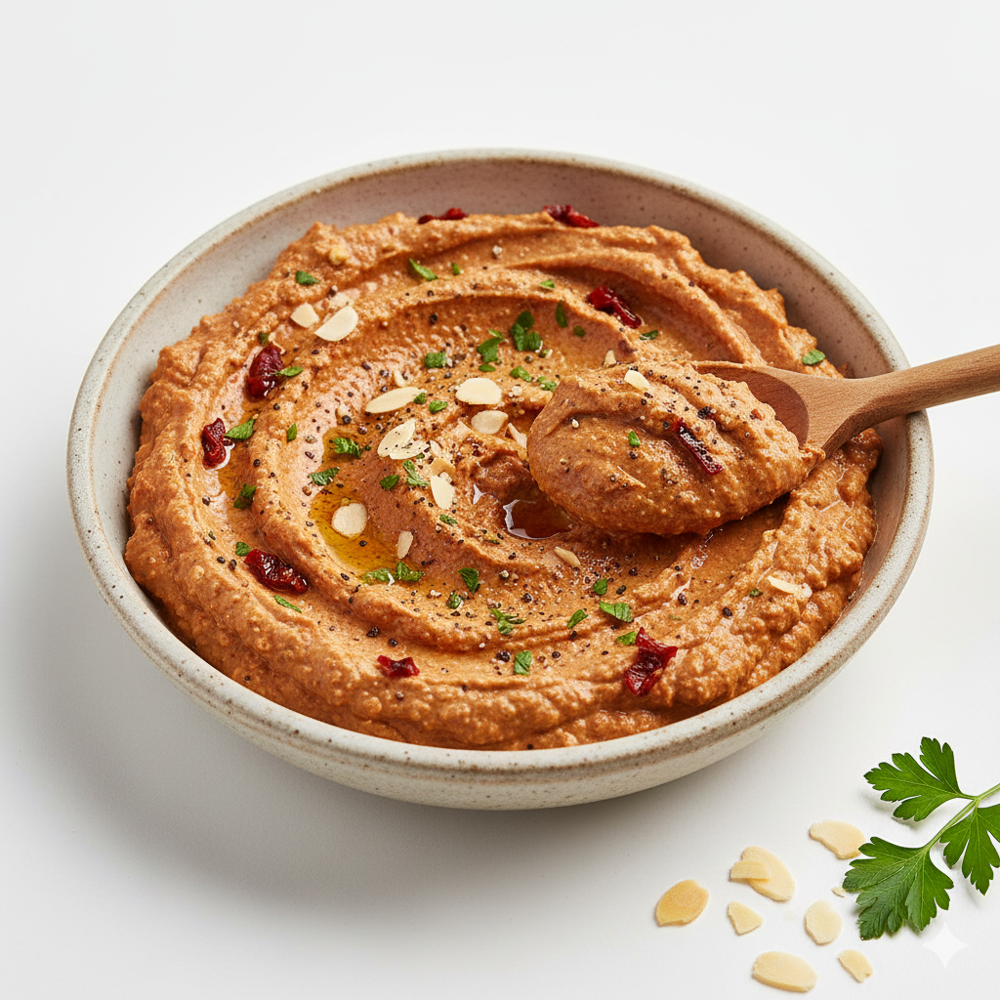
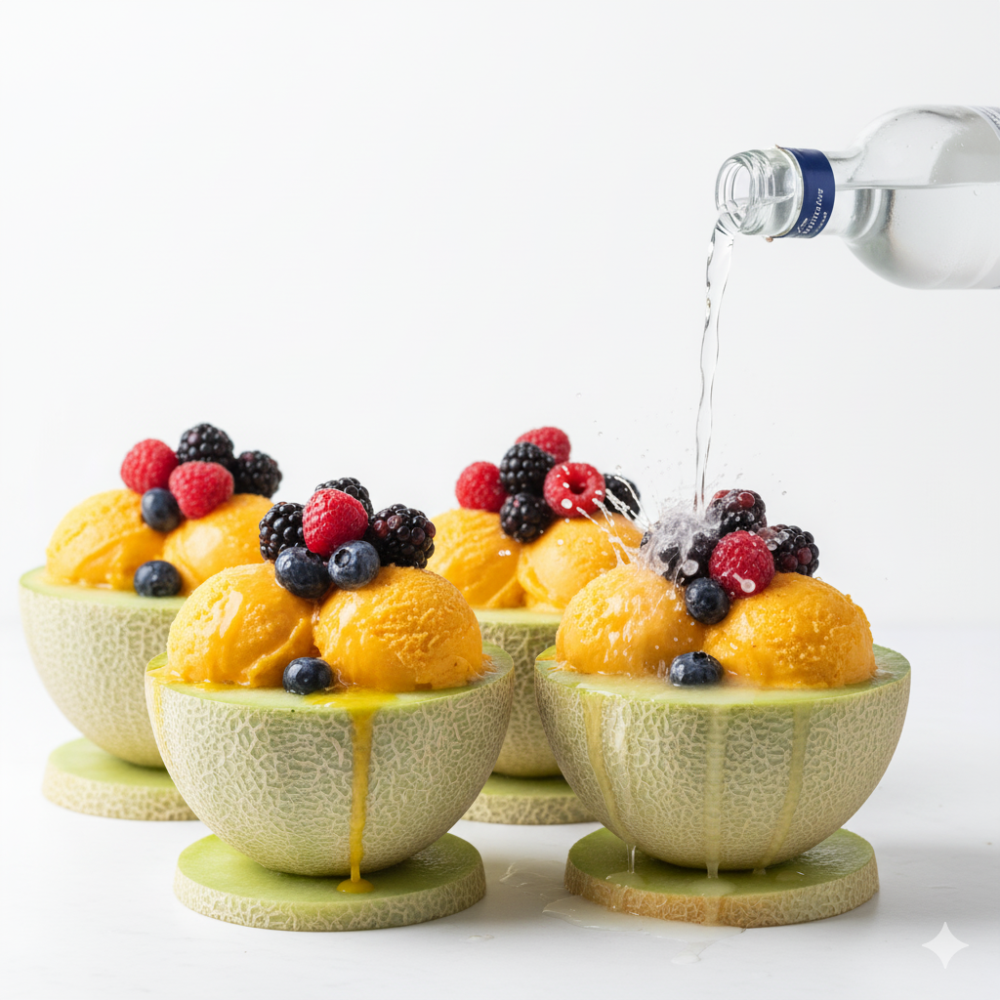
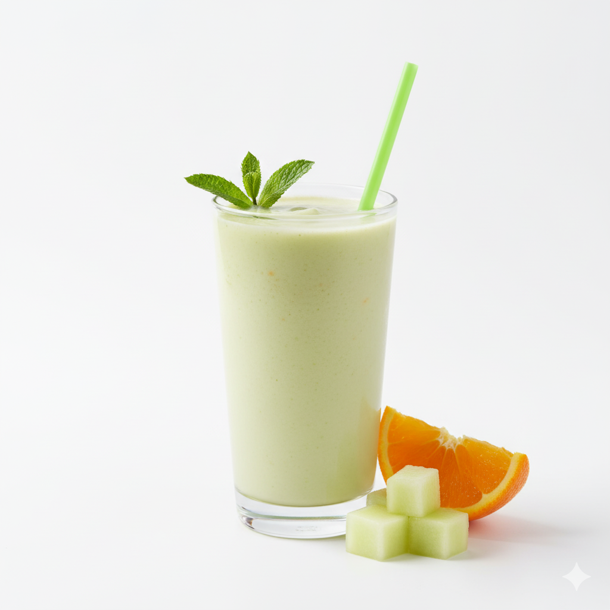
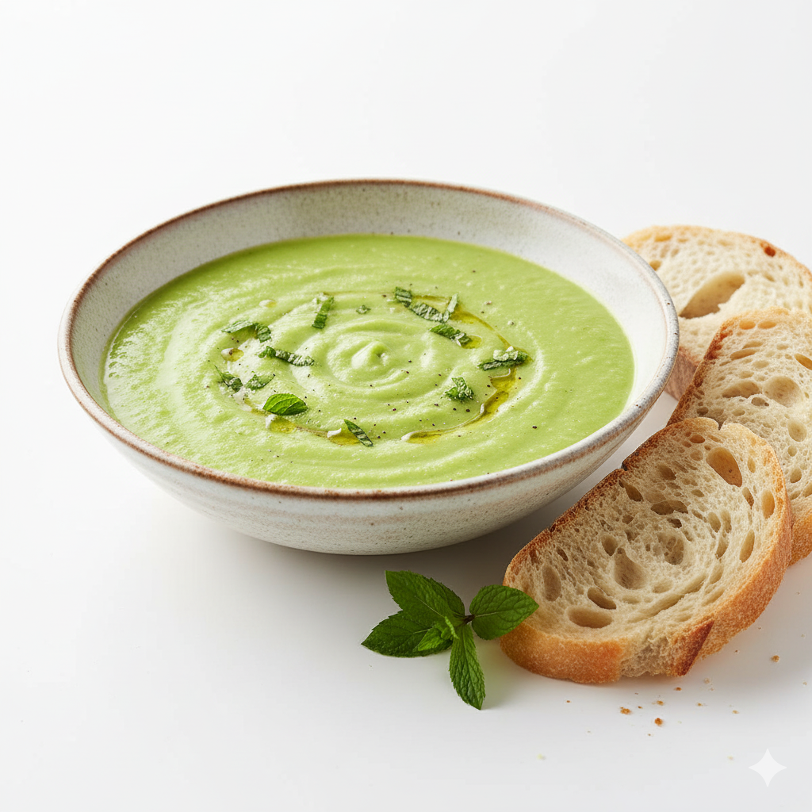
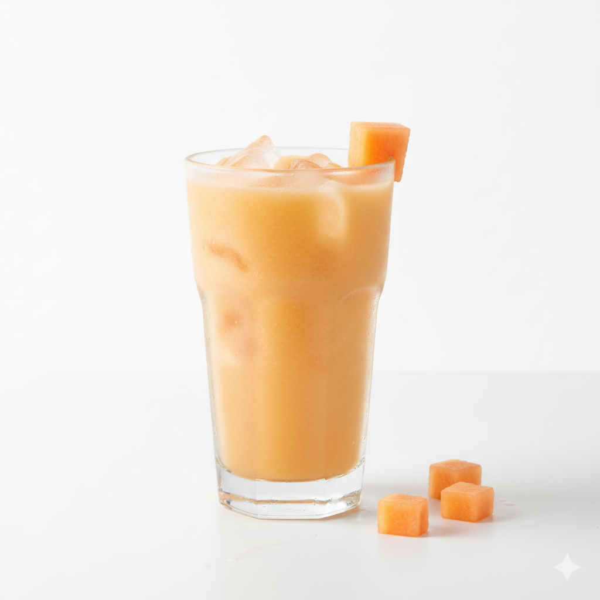
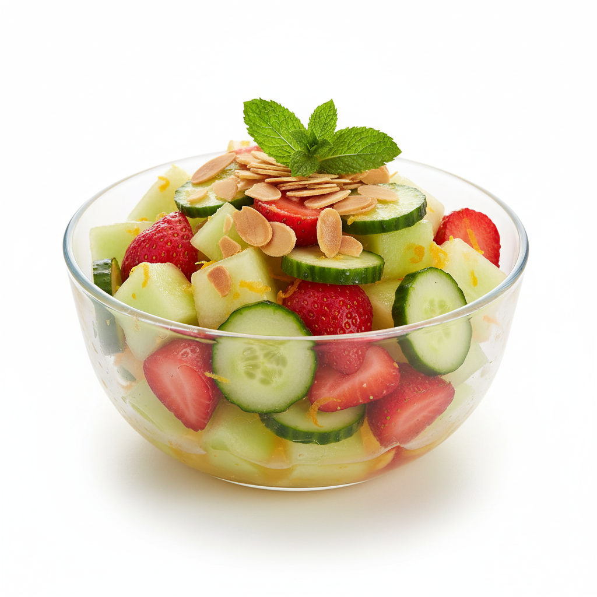
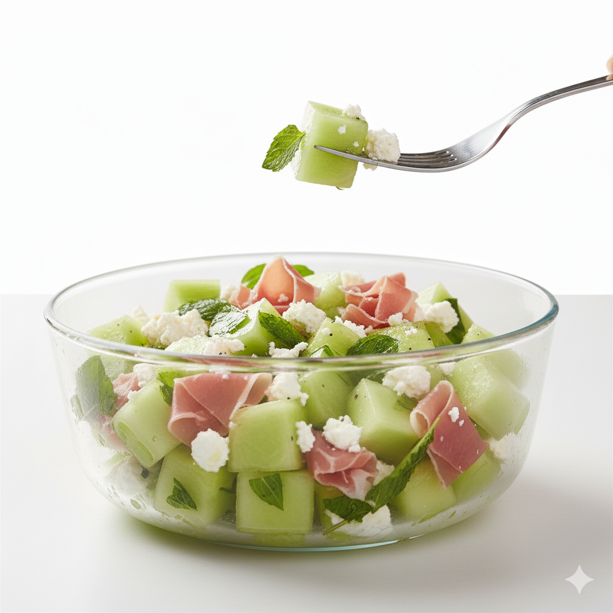
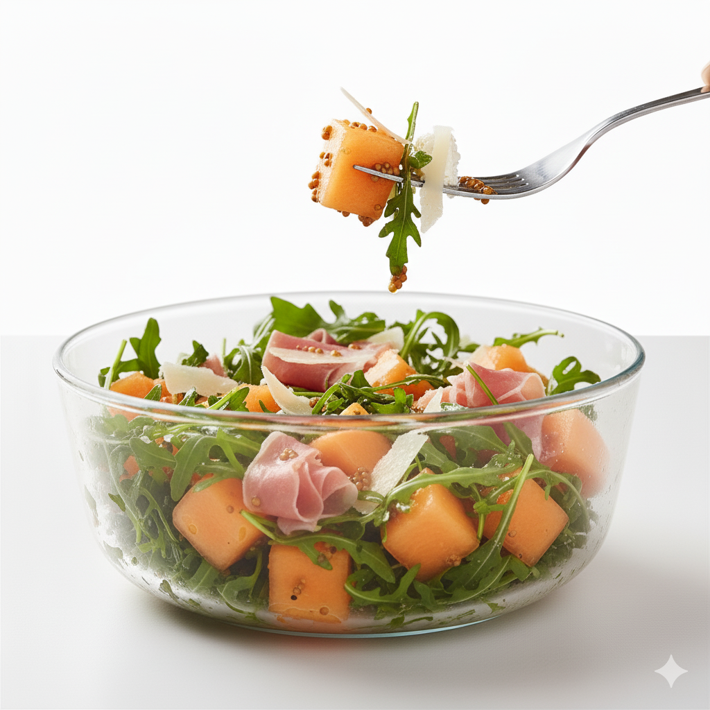

Our Favourite Recipes
Delicious ways to enjoy our farm-fresh melons and peppers.

Red Pepper & Almond Dip

Zingy Summer Dessert

Honeydew Orange Smoothie

Honeydew Splash Soup

Caribbean Cocktail

Mint Melon Dessert

Savoury Melon Salad

Fruity Bacon Salad
